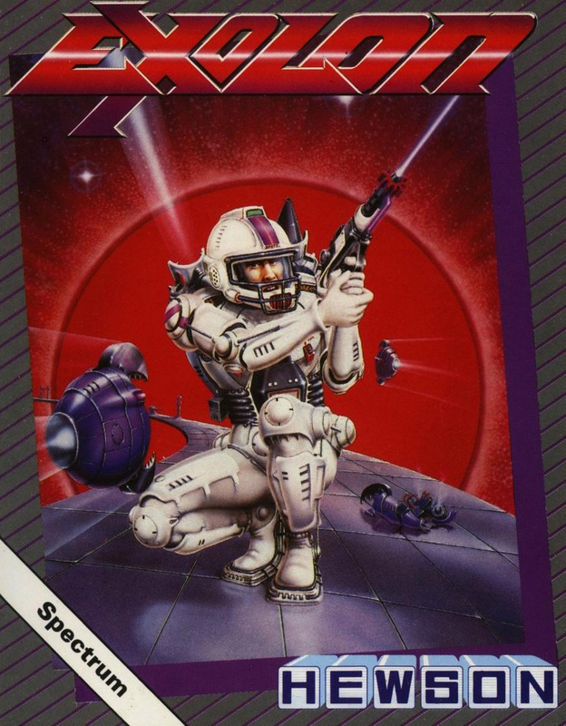
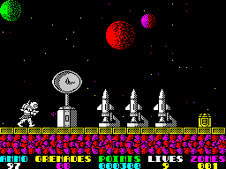
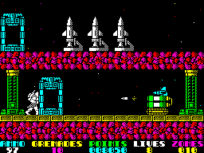
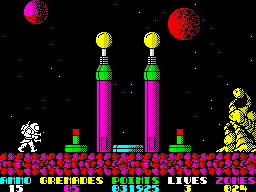

Exolon


{kind=link}

| Publisher: | Hewson |
| Price: | £7.95 |
| Year: | 1987 |
| Source: | CRASH, Issue 43 |

With your great reputation as an eraser of aliens, you’re employed to rid a planet of a mixed bag of beasties. You face a world infested with rotund attackers released from birth pods, homing missiles, accelerating space lice, exploding mines, and bum-pummelling hydraulic plungers.

For protection, you carry a blaster to destroy the lesser, thin-skinned aliens and laser-beam barriers; grenades that take out stronger creatures, machinery, obstructing rock formations and mushrooms; and a pulse bomb that disrupts enemy security systems. Blaster ammunition and grenades are replenished with each loss of life, and extra supplies may be collected from arsenal boxes.
For additional safety, passing through a dressing unit clothes you in an exoskeleton, and thus besuited you have extra blast power and protection against ground mines and some aliens. But if you’re wearing this suit when a level of 25 screens is completed, your bravery bonus falls from 10,000 points to only 1,000.

screen after screen of highly colourful
and explosive action in Hewson’s latest
high-tech shoot-’em-up
CRITICISM
“It’s always nice to relax with a good shoot-’em-up, and Exolon is an excellently-presented game of this type. The graphics are highly-detailed and colourful, and the movement is very smooth. Though it’s very simple, it can keep you amused for hours — each screen presents the player with a host of new problems. Instantly playable and highly addictive, Exolon makes an excellent buy for shoot-’em-up fans.”
ROBIN
“Exolon is a very good, very playable, very addictive game. The graphics are terrific — the backgrounds and gun emplacements are very pretty. And the aliens are a real pain in the backside as they wander around the screen, killing you off at every opportunity. Overall Exolon is a highly competent space shoot-’em-up — go out and buy it.”

“Hey! Exolon is a really good game! The graphics are superb, with excellent use of colour, and there’s so much to do that it’s sure to last for ages. The high-score table is big, one of the largest I’ve seen, and the options screen is nice and bright. The different guns, the teleports and bits of scenery that have to be shifted are all portrayed very prettily, and require different tactics; my personal favourite is the gun that fires on two levels at the same time. Brilliant!”
MIKE
COMMENTS
| Control keys: | Definable |
| Joystick: | Kempston, Interface 2 |
| Use of colour: | Excellent, on option screens as well as the game itself |
| Graphics: | Big, colourful and smooth |
| Sound: | Great tune and splendid FX on the 128, otherwise limited |
| Skill levels: | One |
| Screens: | 125 |
| General rating: | A well-presented traditional shoot-’em-up with plenty to do and look at — and a chance of bonus points at the end of the 128 version |
| Presentation: | 90% |
| Graphics: | 91% |
| Playability: | 91% |
| Addictive qualities: | 92% |
| Overall: | 90% |